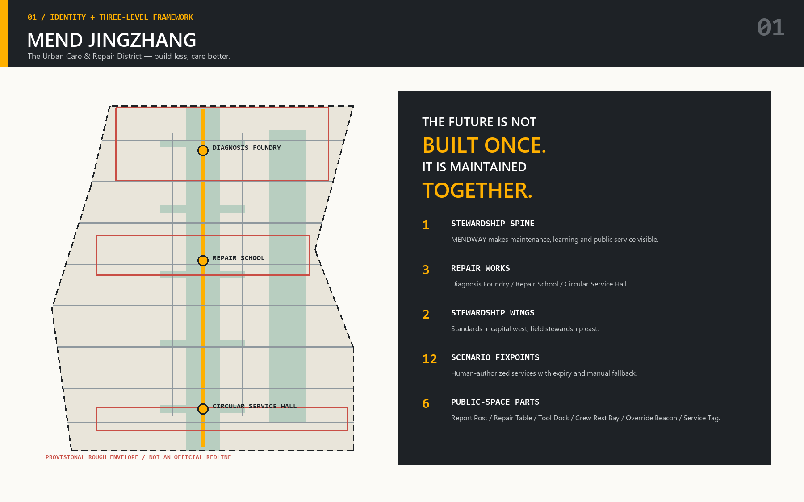
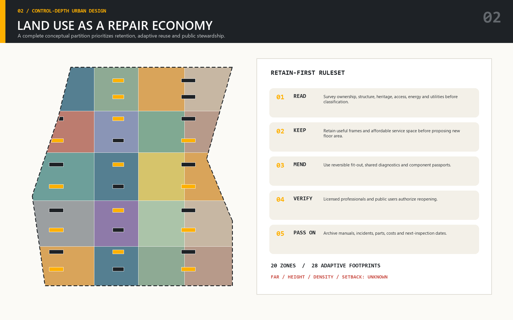
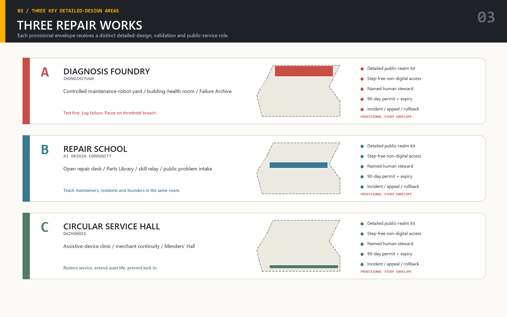
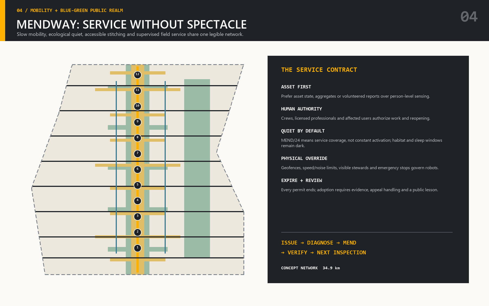
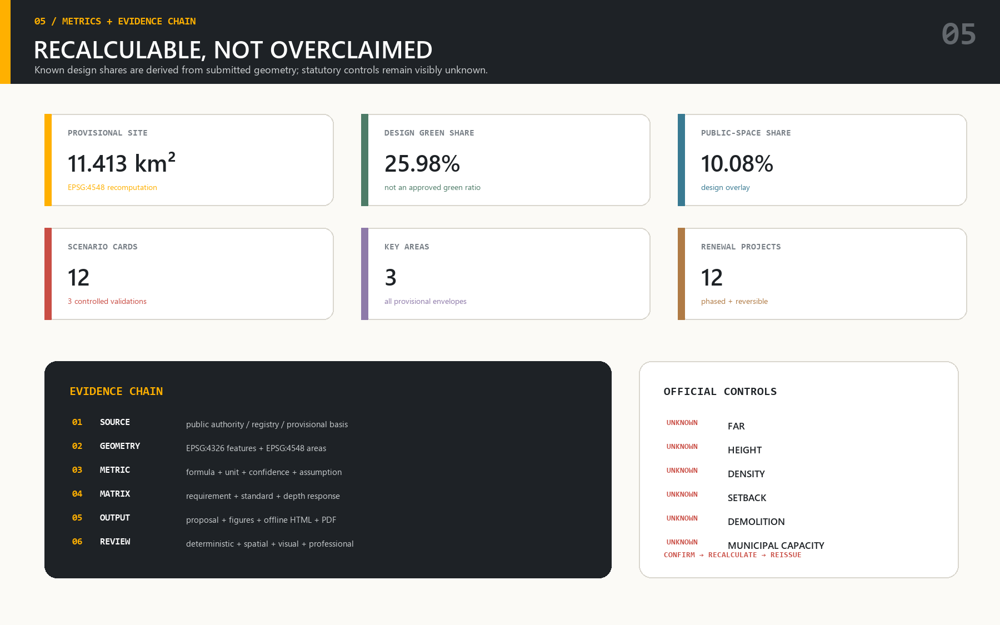

MEND JINGZHANG — The Urban Care & Repair District
A formal, evidence-led urban design proposal that recasts the Centennial Jing-Zhang AI Innovation Belt as a district that continuously inspects, mends, verifies, and passes on its buildings, public services, landscapes, mobility systems, and civic knowledge.
MEND JINGZHANG — The Urban Care & Repair District
**Build less. Care better.** The future is not built once; it is maintained together. MEND JINGZHANG treats artificial intelligence not as a spectacle added to a finished city, but as a civic capacity for noticing failure, coordinating care, extending useful life, and making every intervention accountable. Its public identity is **MEND / 24**, a promise that care continues across hours, seasons, product cycles, and political cycles. The proposal is deliberately conceptual wherever official geometry, control indicators, ownership, utilities, heritage status, or implementation authority remain unavailable.
1. Design Basis and Source Register / 设计依据与资料清单
The proposal begins with an evidence hierarchy. The official announcement establishes the three spatial scales, the mandatory tasks, and the expected professional depth [source:OFFICIAL-ANNOUNCEMENT] [standard:PROJECT-OFFICIAL-ANNOUNCEMENT]. The agent taskbook translates that commission into six machine-auditable duties concerning identity, scenarios, spatial structure, key areas, implementation, and responsible submission [source:AGENT-TASKBOOK] [standard:PROJECT-AGENT-OPEN-CALL-TASKBOOK]. The repository site package supplies schemas, enumerations, provisional geometry, and permitted claims [source:SITE-PACKAGE]; its public source register distinguishes formal-ready evidence from background and provisional material [source:SOURCE-REGISTRY]. The processed fact pack is only a navigation aid, never a substitute authority [source:PROCESSED-FACT-PACK]. Every proposal decision is therefore classified as sourced fact, computed submission metric, conceptual design recommendation, or unresolved dependency.
The present site and key-area polygons are rough, agent-usable constraints derived from the repository’s provisional boundary file, not official redlines [source:BOUNDARY-SOURCE] [source:KEY-AREA-SOURCE]. The submitted site is explicitly identified by [data:geometry/site_boundary.geojson#SITE-001], while the three provisional detailed-design areas are [data:geometry/key_areas.geojson#PROV-KEY-001], [data:geometry/key_areas.geojson#PROV-KEY-002], and [data:geometry/key_areas.geojson#PROV-KEY-003]. Their calculated areas enable topology checks and design comparison, but cannot determine land rights, approvals, compensation, statutory floor area, road redlines, or construction permits. When official polygons arrive, all intersecting land-use, building, road, green, public-space, and phasing layers must be clipped and recalculated as one coordinated update.
The professional method follows the national urban-design, detailed-planning, and land-use references without pretending that a design proposal is an approved plan [standard:MOHURD-URBAN-DESIGN-MEASURES] [standard:MOHURD-CONTROL-DETAILED-PLANNING] [standard:MNR-LAND-USE-CLASSIFICATION-GUIDE] [standard:MOHURD-ARCH-DESIGN-DEPTH-2016]. Existing-condition diagnosis records what is known, what is inferred, and what must be surveyed [depth:existing_conditions_diagnosis]. This evidence discipline is the first act of care: it prevents a visually persuasive diagram from becoming a false administrative claim, and it lets a later professional team replace provisional inputs without losing the design logic.

MEND’s baseline question is not “Where can a new icon be placed?” but “Which urban systems are failing, who feels that failure first, what can be repaired before replacement, and how will the repair be verified?” That question governs the spatial proposal, the AI scenarios, the project list, and the operating model. It also establishes a repeatable design sequence—**observe, diagnose, mend, verify, learn**—so that physical works, software services, and public governance can be reviewed through the same transparent evidence chain.
2. Three-Level Scope Working Framework / 三层范围工作框架
The 43.6-square-kilometre research scope is treated as a relationship field: universities, laboratories, companies, investment, rail infrastructure, neighbourhood services, cultural assets, and talent networks are mapped as mutually dependent systems rather than as a claim for construction control. The approximately 11.4-square-kilometre overall-design scope is the operational district in which renewal, land-use organisation, mobility, infrastructure, public realm, and development capacity are coordinated. The three key areas, together described by the brief as about 368.4 hectares, are the places where those district rules are tested at detailed urban-design resolution. This nesting responds respectively to [requirement:1.4.1], [requirement:1.4.2], and [requirement:1.4.3], with the relationship itself checked through [depth:three_level_scope_framework].
Across the overall-design scope, **MENDWAY** becomes a Stewardship Spine following the Jing-Zhang heritage and open-space logic. It links three “Repair Works”: the **Diagnosis Foundry** at Zhongzhiyuan, the **Repair School** at the Beijing AI Origin Community, and the **Circular Service Hall** at Dazhongsi. Two broader “Stewardship Wings” connect this spine to the Zhongguancun standards-and-capital ecosystem and the Xiaoyuehe field-stewardship landscape. Ten fixed service points and two distributed protocols host the twelve scenario cards described later. This is a legible working framework, not a new statutory boundary or a promise of land acquisition.

Decisions move both downward and upward between levels. Research-scale evidence identifies missing services and transferable innovation mechanisms; district-scale design allocates access, public space, ecological function, and adaptable premises; key-area design tests frontages, crossings, courtyards, building reuse, logistics, and operating responsibility. Conversely, a failed local pilot can change the district protocol and research agenda. The proposal therefore avoids the familiar sequence in which a strategy is completed first and implementation is appended later. Every strategic claim must have a spatial carrier, every carrier must have an operator and dependency, and every pilot must state the evidence that would justify scaling it.
The framework fulfils world-class ecosystem, future-city-form, and quality-of-life ambitions as linked obligations rather than separate slogans [requirement:1.3.1] [requirement:1.3.2] [requirement:1.3.3]. Its overall spatial structure is evaluated through [depth:overall_spatial_structure], and its provisional geometry can be revisited without abandoning the core hierarchy. MENDWAY is therefore best understood as a stewardship agreement expressed in space: continuity of walking, ecological care, repair services, learning, and public accountability across all three scales.
3. Research-Scope Industry and Future-City Study / 统筹研究范围产业与未来城市研究
MEND positions Haidian’s AI advantage around a missing urban capability: long-term care for complex systems. Laboratories and universities contribute models, robotics, materials, human-computer interaction, and evaluation; enterprises turn them into maintainable products; public agencies and communities define legitimate problems; investors finance durable services rather than disposable demonstrations; and vocational partners build the workforce that keeps systems functioning after launch. This closes a gap between invention and daily reliability. It answers the strategic-study duties in [requirement:1.5.1.1] and [requirement:1.5.1.2] while keeping industrial strategy connected to ordinary streets, public services, and building life cycles.
Seven international cases are used only as mechanism precedents. Singapore’s AI Verify demonstrates how common testing tools can support accountable AI deployment [source:CASE-AI-VERIFY]. Amsterdam’s Marineterrein shows the value of a managed urban test environment with explicit access and learning conditions [source:CASE-MARINETERREIN]. Helsinki’s Smart Kalasatama demonstrates time-bounded agile pilots tied to resident needs [source:CASE-KALASATAMA]. Barcelona’s 22@ illustrates long-term regeneration that combines productive activity, knowledge institutions, housing, and public investment [source:CASE-BARCELONA-22AT]. Station F shows how a large shared campus can bundle entrepreneurial services and peer contact [source:CASE-STATION-F]. Mila shows how research excellence can be joined to partnerships and responsible AI inquiry [source:CASE-MILA]. The United Kingdom’s AI assurance roadmap frames assurance as an ecosystem of skills, standards, services, and demand rather than a single certification [source:CASE-UK-AI-ASSURANCE]. None supplies a Beijing control line; each contributes a testable organisational lesson.
The proposed innovation chain has five linked stages: **identify a public or industrial care problem; assemble a governed data and testing agreement; prototype in a controlled environment; verify performance and human override; publish maintenance knowledge and procurement lessons**. The chain supports robotics and autonomous mobility, AI public services, and youth-friendly public space without locking the district to one technology cycle. Procurement rewards service continuity, repairability, interoperability, accessibility, and documented failure handling. Small firms can enter through challenge calls and shared facilities, while established firms can contribute components, assurance capacity, apprenticeships, and stable operations.
The district identity converts that economic proposition into a public culture. **MEND** is both a verb and a civic standard; **/24** indicates continuous responsibility rather than round-the-clock surveillance. The five public chapters—BUILD, INSPECT, MEND, VERIFY, PASS ON—organise exhibitions, wayfinding, curricula, and annual events. A bilingual Repair Passport records participation in workshops and public reviews without tracking movement. The MEND 100 challenge, Menders Fellowship, Second-Shift Review, Failure Assembly, and MEND Week make failure analysis and repair skills visible. These initiatives fulfil the naming, ecosystem, scenario, and long-term-operation tasks in [requirement:agent.1], [requirement:agent.2], and [requirement:agent.5], subject to operator, funding, and public-space permissions.
4. Overall-Scope Urban Renewal and Control-Plan-Depth Urban Design / 总体设计范围城市更新与控规深度城市设计
The overall plan is organised as a repairable urban fabric rather than a tabula rasa. The land-use layer forms a complete, non-overlapping conceptual partition inside the provisional site [data:geometry/land_use.geojson#LU-001] [data:geometry/land_use.geojson#LU-002] [data:geometry/land_use.geojson#LU-003] [data:geometry/land_use.geojson#LU-004]. It combines productive innovation premises, mixed civic services, adaptable neighbourhood support, and continuous green/public-space systems. Building footprints are design evidence, beginning with [data:geometry/buildings.geojson#BLDG-001], not cadastral or surveyed building records. Streets and service routes begin with [data:geometry/roads.geojson#ROAD-001]; green and civic-space systems begin with [data:geometry/green_space.geojson#GREEN-001] and [data:geometry/public_space.geojson#PUBLIC-001]. Together, these layers allow spatial review rather than relying on an illustrative masterplan alone.
Renewal is directed by three rules. First, protect continuity: retain useful structures, mature landscape, affordable workspaces, and community services wherever safety and function permit. Second, make adaptations reversible: lightweight infill, accessible entrances, service cores, shading, and shared equipment should be separable from the original fabric. Third, reserve irreversible action for verified necessity: demolition or major infrastructure change requires survey, ownership, heritage, safety, embodied-carbon, and displacement evidence. This approach fulfils the low-efficiency-space, industrial-land, and functional-organisation tasks [requirement:1.5.2.1] [requirement:1.5.2.2] [requirement:1.5.2.3], while the implementation and policy response is carried forward under [requirement:1.5.2.4] and [requirement:1.5.2.5].
The district is structured by MENDWAY, cross-stitch streets, repair courtyards, ecological rooms, and service clusters near rail and existing activity. Active ground floors face the spine; quieter research and residential-support uses occupy protected interiors; logistics use managed edges and timed access. Height and massing step toward heritage and residential interfaces, while larger adaptable floorplates are located only where access, fire safety, servicing, and townscape assessment could support them. These are qualitative controls pending official FAR, height, density, setback, road-redline, and heritage data. The land-use and intensity work is therefore marked through [depth:land_use_layout], [depth:development_intensity_controls], and [depth:height_massing_character], not presented as approved numerical control.
The empty constraint register [data:geometry/constraints.geojson#empty-cleared-register] does not mean that the site has no constraints; it means no additional verified constraint geometry has been supplied for this submission. Before professional implementation, the team must add official planning conditions, ownership, utilities, flood and ecological controls, fire access, archaeological and heritage findings, building surveys, trees, and public-service capacity. The design remains valuable because its parts can be re-clipped and prioritised when those controls arrive. This disciplined incompleteness is more credible than false precision and is consistent with [standard:MOHURD-CONTROL-DETAILED-PLANNING].
5. Detailed Design of Key Areas / 重点区域详细设计
The three detailed areas test one district idea under different urban conditions and together satisfy the mandatory key-area requirement [requirement:1.5.3.required]. The submitted polygons are provisional constraints, so stated positions and edges are for design discussion only. The design depth is nonetheless specific: each area has a role, public-space sequence, building action, mobility response, AI service, validation setting, operating partner, and dependency. These elements are reviewed under [depth:three_key_area_detailed_design] and visualised in the key-area drawing below.

| Repair Work | Detailed proposition | Public realm and building action | Programme and validation | Dependencies | | --- | --- | --- | --- | --- | | **Diagnosis Foundry — Zhongzhiyuan** | A garden-based autonomous-innovation and standards district serving [requirement:1.5.3.1]. | Repair existing premises before infill; open a visible ground-floor diagnostic loop; connect the Qinghe-facing landscape, shaded work courts, transit arrival, and controlled logistics. | Controlled Maintenance Robot Yard, model/system assurance studios, Failure Archive, low-carbon equipment demonstrations. | Official boundary, building and ownership survey, Qinghe/flood controls, road access, safety and security review. | | **Repair School — Beijing AI Origin Community** | A near-campus conversion, apprenticeship, and talent district serving [requirement:1.5.3.2]. | Stitch campus, park, neighbourhood, and rail routes; retrofit affordable small-floorplate premises; add accessible thresholds, shared workshops, kitchens, and evening study space. | Skill Relay Studio, Open Repair Desk, Assistive Device Clinic, Responsible Asset Triage Sandbox, Menders Fellowship. | Campus interfaces, property rights, fire and accessibility audit, rail integration, housing and public-service capacity. | | **Circular Service Hall — Dazhongsi** | An urban AI enterprise and international-exchange district serving [requirement:1.5.3.3]. | Repair the station’s four-quadrant walking connections; create active ground floors and a civic service hall; reuse large structures as flexible demonstration and repair premises. | Merchant Rescue, Circular Hardware & Assistive-Tech Clinic, Public Service Continuity Copilot, international showcases. | Station and intersection design, utilities, commercial leases, delivery management, data and event governance. |
The areas are intentionally complementary. Zhongzhiyuan asks whether advanced systems can be tested safely and explained publicly; the Origin Community asks whether knowledge can become livelihoods, accessible services, and affordable space; Dazhongsi asks whether circular service models can operate at metropolitan interchange intensity. A common kit—Report Post, Repair Table, Tool Dock, Crew Rest Bay, Human Override Beacon, and Service Tag—makes the experience recognisable while allowing local material and programme differences.
Detailed plans should preserve pedestrian continuity through every delivery phase. Temporary works must maintain safe routes, lighting, weather protection, and accessible alternatives; construction logistics must be separated from learning and public test areas. Each Repair Work has a publicly legible “human override” location where a person can stop an automated service, obtain assistance, and report harm. Performance is reviewed against accessibility, repair time, service continuity, energy and material use, local-business impact, and user trust—not visitor counts alone.
6. AI Ecosystem, Talent Personas, and AI+ Scenarios / AI 创新生态、人才画像与 AI+ 场景
MEND designs for people who keep the city working as well as people who invent new systems. Five primary personas expose different failure costs. **Zhao Mei**, a municipal maintenance crew lead, needs reliable work orders, safe rest, clear responsibility, and offline fallbacks. **Lin Wei**, a repair-robotics founder, needs affordable test space, assurance advice, parts, and procurement pathways. **Guo Jian**, an older wheelchair user, needs continuous accessible routes and human assistance when navigation fails. **Mei Chen**, a shop owner and caregiver, needs predictable deliveries, rapid service recovery, and evening support. **Amina Rahman**, an international graduate and apprentice, needs bilingual orientation, recognised skills, welcoming public space, and routes from research to employment. Their needs satisfy the talent-and-lifestyle mandate without constructing invasive behavioural profiles.
The twelve scenario cards form an operational portfolio rather than a collection of screens:
| Card | User, place, and service | Safeguard and success test | | --- | --- | --- | | **01 Fixpoint** | A visible Report Post on MENDWAY lets anyone photograph or describe a damaged asset and receive a traceable service ticket. | Anonymous access and non-digital reporting remain available; success is verified closure and user confirmation. | | **02 Accessible Route First** | Guo Jian receives step-free route guidance while crews receive prioritised obstruction reports. | No individual trip history is retained; a staffed fallback and physical signs remain; test continuous passage. | | **03 Blue-Green Steward** | Sensors and field observations help teams inspect shade, soil moisture, drainage, and habitat stress. | Ecological decisions require professional review; test reduced failure and water use, not surveillance coverage. | | **04 Second-Shift Service Window** | Mei Chen and evening workers access assisted municipal, health-navigation, and enterprise services after office hours. | Human escalation, bilingual explanation, and appointment privacy are mandatory; test resolved needs. | | **05 Open Repair Desk** | Students, residents, and small firms bring devices or service problems to a supervised diagnostic table. | Consent and data-wiping protocols apply; publish reusable lessons, never personal data. | | **06 Assistive Device Clinic** | Clinicians, makers, and users adjust mobility and communication aids in the Repair School. | Clinical boundaries and qualified sign-off remain explicit; success is safe continued use. | | **07 Merchant Rescue** | A copilot helps small businesses navigate permits, disruption, logistics, and continuity planning. | Advice cites its source and routes legal decisions to staff; test time saved and avoided closure. | | **08 Building Health Room** | Owners and crews compare inspections, energy anomalies, comfort complaints, and maintenance plans. | No automated safety approval; qualified survey governs intervention; test avoided failure and extended life. | | **09 Heritage Condition Diary** | Residents and specialists document change along the Jing-Zhang cultural route. | Heritage authorities validate interpretation; AI cultural guidance identifies uncertainty and image rights. | | **10 Skill Relay Studio** | Amina and Zhao exchange robotics, repair, safety, language, and field knowledge through paid micro-apprenticeships. | Fair pay and credential portability are required; test employment and retained skills. | | **11 Quiet Night Load Balancer** | Timed logistics, charging, lighting, and cleaning reduce conflict around homes and evening spaces. | Residents set disturbance thresholds; no facial or individual tracking; test noise and complaint reduction. | | **12 Public Service Continuity Copilot** | Agencies rehearse outages and coordinate accessible alternatives across health, mobility, and civic services. | Staff retain command; exercises use minimised or synthetic data; test recovery time and clear communication. |
Three controlled validation settings prevent pilots from leaking risk into ordinary public space. The **Controlled Maintenance Robot Yard** uses separated paths, speed limits, remote stop, spotters, incident logs, and staged public access to test low-speed inspection and delivery. The **Responsible Asset Triage Sandbox** compares model recommendations with qualified inspectors, documents error patterns, and prohibits automated disposition of public assets. The **Circular Hardware & Assistive-Tech Clinic** tests repairability, parts traceability, hygiene, electrical safety, and user sign-off before equipment returns to service. Only verified components move into live streets, and every deployment retains a named operator and rollback plan.
These scenarios fulfil the required scenario, scene-opening, and responsible-agent tasks [requirement:agent.2] [requirement:agent.3] [requirement:agent.6]. Spatially, they connect public-space evidence [data:geometry/public_space.geojson#PUBLIC-001], movement evidence [data:geometry/roads.geojson#ROAD-001], and ecological evidence [data:geometry/green_space.geojson#GREEN-001]. Governance follows data minimisation, purpose limitation, accessibility, explainability, security review, human override, incident reporting, and scheduled retirement. AI may recommend and coordinate; it does not approve plans, diagnose patients, determine legal rights, or replace accountable staff.
7. Land Use, Building Scale, and Retain–Renovate–Demolish Plan / 用地、建筑规模与拆改留方案
Land use is conceived as a fine-grained service ecology. Productive research and repair premises sit near controlled logistics and transit; small enterprise and training space sits on visible, affordable frontages; housing-support and daily services protect a lived-in district; cultural, educational, and public-service uses anchor the promenade; green and civic space remain continuous rather than becoming residual parcels. The submitted partition is a design hypothesis checked for coverage and overlap against the provisional boundary. It follows classification discipline [standard:MNR-LAND-USE-CLASSIFICATION-GUIDE], but its categories, boundaries, and development rights must be reconciled with official land and control data.
Buildings are assigned to a four-step evidence gate. **Retain and care** applies where structural safety, function, heritage, affordability, and embodied value favour continued use. **Repair and retrofit** adds access, fire and service upgrades, passive comfort, flexible subdivision, and repairable systems. **Selective transformation** allows reversible courtyards, connectors, rooftop or edge additions only after structural, townscape, daylight, fire, and ownership review. **Remove only when verified** applies where a qualified survey proves unacceptable safety, infrastructure conflict, or inability to meet essential public needs; even then, materials should be inventoried for reuse. This completes [depth:retain_renovate_demolish] without falsely classifying unsurveyed existing buildings.
The building-footprint metric [metric:building_footprint_area_sqm] describes submitted design polygons, not total floor area or an official inventory. Floor area ratio [metric:floor_area_ratio] remains unknown until official boundary, floors, use, and control data are available. Height, density, and setbacks are likewise not invented. At detailed design, massing should form repair courts of human-scaled fronts, daylight passages, and adaptable floorplates. Ground floors along MENDWAY reserve space for shared tools, service desks, exhibits, affordable food, and accessible amenities; upper levels may support research, training, work, and compatible living services. Roofs are treated as maintainable infrastructure for shade, biodiversity, water, and energy only after structural review.
Displacement prevention is a design criterion. Before any parcel intervention, an independent register should record occupants, rents, business dependencies, jobs, public-service use, and relocation risk. Phasing must keep alternative premises available before work begins. Small tenants receive fit-out support and first-return options; repair-sector apprenticeships are paid; procurement lots are sized so local firms can compete. These measures turn “urban renewal” from a visual upgrade into continuity of livelihoods, knowledge, and public access.
8. Mobility, Rail, Municipal Systems, and Public Services / 交通、轨道、市政与公共服务设施
Mobility follows a care hierarchy: walking and wheeling first, cycling second, public transport and shared mobility third, managed servicing fourth, and private through-traffic last. MENDWAY is a continuous low-speed public route, while cross-stitch links repair severance between neighbourhoods, campuses, parks, employment, and rail stations. Junctions are simplified; crossings are raised or shortened where engineering review permits; shade, seating, lighting, winter comfort, toilets, drinking water, and repair points make the route usable rather than merely mapped. Parking and loading are consolidated at managed edges, with timed low-speed robot or cargo-bike access tested only in controlled conditions.
Rail integration focuses on the complete door-to-platform journey. Dazhongsi’s four quadrants require coordinated crossings, wayfinding, weather protection, bicycle parking, pickup management, and accessible interchange. The Origin Community requires safe campus-to-station continuity and legible late-evening routes. Zhongzhiyuan requires staff, visitor, freight, and emergency movements to be separated without turning the campus into an enclave. These recommendations are conceptual until station ownership, passenger flows, road geometry, emergency access, and planned works are confirmed. They are evaluated under [depth:traffic_rail_slow_parking].

Municipal infrastructure becomes a visible maintenance system. Shared service corridors should reserve inspectable access for power, communications, water, drainage, heat or cooling where feasible; equipment must expose condition and maintenance responsibility without exposing security-sensitive details. Distributed energy, charging, edge computing, and sensors are introduced only after load, carbon, cyber-security, noise, fire, cooling, and end-of-life assessments. Rainwater and landscape systems use passive performance first, with AI assisting inspection rather than replacing hydraulic or ecological design. This work is tracked through [depth:municipal_new_infrastructure].
Public services combine physical counters, trained staff, interpreters, and optional AI navigation. The Second-Shift Service Window supports people outside standard hours; the Assistive Device Clinic links health-navigation to qualified care; the Merchant Rescue desk links enterprise support to accountable officers; toilets, childcare-compatible spaces, crew rest, and quiet rooms make service work dignified. No service is made digital-only. Continuity plans state an offline procedure, a responsible organisation, response time, and accessible communication route for outages or model failure.
9. Blue-Green Space, Public Realm, and Urban Character / 蓝绿空间、公共空间与城市风貌
The blue-green system is both habitat and daily care infrastructure. It connects the Jing-Zhang open-space legacy, Qinghe and Xiaoyuehe interfaces, street shade, rain gardens, soil volumes, habitat patches, and repair courtyards. The submitted green-space ratio [metric:green_ratio] and public-space ratio [metric:public_space_ratio] are computed from design geometry within the provisional site; they are not statutory quotas. Future surveys must identify trees, canopy, soils, water levels, flood pathways, utilities, contamination, microclimate, and maintenance capacity before exact landscape design. The plan prioritises continuity, shade equity, infiltration, biodiversity, and low-maintenance planting over ornamental area alone [depth:blue_green_public_space].
Six components make stewardship tangible. A **Report Post** accepts faults without requiring a phone. A **Repair Table** hosts staffed diagnosis and learning. A **Tool Dock** stores shared, checked equipment. A **Crew Rest Bay** provides shade, water, power, and dignity for field workers. A **Human Override Beacon** stops or escalates an automated service. A **Service Tag** states who maintains an asset, when it was checked, and how to report a problem. These components repeat with different materials in each key area, turning maintenance from back-of-house labour into a respected public interface.
Urban character joins three histories: the railway’s long infrastructure life, Zhongguancun’s culture of experimentation, and the everyday care practices of residents and workers. The promenade chapters BUILD → INSPECT → MEND → VERIFY → PASS ON appear in bilingual wayfinding, public art, demonstrations, and learning. Three landmarks resist the generic “technology pavilion.” The **Failure Archive** at the Diagnosis Foundry exhibits what failed and what was learned. The **Parts Library** at the Repair School stores components, manuals, samples, and open repair knowledge. **Menders’ Hall** at Dazhongsi is a civic room for service, debate, markets, and international exchange.
Building expression is robust, open, and adaptable: retained structures keep legible traces; new insertions are demountable where possible; deep shade and visible stairs create social thresholds; night lighting is warm, selective, and repairable; screens never dominate heritage or residential edges. Branding uses owned, open, or original assets only. “MEND / 24” is an invitation to shared responsibility, not a claim of constant monitoring. The result is a future-city identity grounded in how well the district cares for people and assets over time.
10. Renewal Projects, Implementation Policy, and Phasing / 更新项目清单、实施政策与分期计划
The renewal programme is a portfolio with named dependencies, not a construction promise. **M-01 MENDWAY Continuity Works** repairs crossings and accessible routes. **M-02 Diagnosis Foundry Retrofit** opens testing and assurance spaces at Zhongzhiyuan. **M-03 Repair School and Parts Library** converts adaptable premises near the Origin Community. **M-04 Circular Service Hall** establishes the Dazhongsi civic-enterprise interface. **M-05 Qinghe and Xiaoyuehe Stewardship Rooms** combines ecological monitoring with field crews. **M-06 Four-Quadrant Station Stitch** coordinates Dazhongsi interchange. **M-07 Second-Shift Service Network** extends accountable public support. **M-08 Building Health Rooms** pilots preventive maintenance. **M-09 Controlled Robot Yard** provides gated validation. **M-10 Public-Space Care Kit** installs the six components. **M-11 Heritage Condition Diary** links specialist and community observation. **M-12 MEND Operations Office** publishes performance, incidents, procurement lessons, and next-year priorities.
Implementation proceeds through five gates represented by the phasing evidence [data:geometry/phasing.geojson#PHASE-001]. **Phase 0—verify** obtains official geometry, surveys, governance partners, public participation, baseline accessibility, and risk registers. **Phase 1—make continuity visible** uses reversible wayfinding, Report Posts, crossing trials, crew facilities, and staffed repair events. **Phase 2—retrofit the three Repair Works** delivers building and public-realm pilots after approvals. **Phase 3—connect systems** expands the stewardship spine, utilities, rail integration, and service network based on evaluated results. **Phase 4—renew the mandate** reviews whether each service should scale, change operator, be redesigned, or retire. This sequence is assessed through [depth:renewal_project_list] and [depth:phasing_implementation].
Four policy instruments support delivery. A **Stewardship Compact** assigns asset, data, service, and incident responsibilities across public agencies, owners, operators, research partners, and communities. **Repair-first procurement** evaluates lifecycle service, open interfaces, spare parts, accessibility, and exit plans. A **provisional-use protocol** enables reversible pilots without silently creating development rights. A **public evidence ledger** reports methods, aggregated outcomes, failure events, mitigations, and procurement lessons in accessible language. Independent accessibility, safety, privacy, and ecological reviewers hold stop or redesign authority.
Long-term operations are led by a proposed MEND Office with a rotating resident-worker-research advisory panel; this is a governance concept, not an existing government commitment. The annual cycle publishes a baseline, selects challenges, contracts pilots, conducts Second-Shift Reviews, holds a Failure Assembly, and issues a renewal decision. MEND 100 and the Menders Fellowship create routes for young people, technicians, international graduates, local businesses, and maintenance crews to contribute. Financing can blend existing maintenance budgets, research funds, tenant or owner contributions, sponsorship with strict conflict rules, and outcomes-based grants, but no source is assumed until formally secured.
11. Metrics, Area Recalculation, and Compliance Matrix / 指标体系、面积复算与合规矩阵
Metrics are separated into computed spatial evidence, unresolved controls, and operational performance. The provisional submitted area [metric:site_area_sqm], building-footprint area [metric:building_footprint_area_sqm], green-space area [metric:green_space_area_sqm], green ratio [metric:green_ratio], public-space area [metric:public_space_area_sqm], public-space ratio [metric:public_space_ratio], and road-network length [metric:road_network_length_m] can be recalculated from GeoJSON. Counted design outputs include land-use zones [metric:land_use_zone_count], building interventions [metric:building_intervention_count], key areas [metric:key_area_count], scenario cards [metric:scenario_card_count], validation settings [metric:validation_scenario_count], personas [metric:persona_count], landmarks [metric:landmark_count], renewal projects [metric:renewal_project_count], and phases [metric:phase_count]. The floor area ratio [metric:floor_area_ratio], building height [metric:building_height_m], building density [metric:building_density], setback [metric:setback_m], and approved demolition area [metric:approved_demolition_area_sqm] remain unknown until official controls, surveys, and approvals exist. Operational measures—repair closure time, accessible-route continuity, repeat failure, service recovery, retained affordable premises, apprentice outcomes, material reuse, ecological condition, user trust, and human-override incidents—require baselines and should never be fabricated as design-stage achievements.

Area recalculation uses one projected coordinate reference system, valid polygons, non-overlapping land-use coverage, and explicit numerator/denominator files. Rounding occurs only after calculation. Geometry evidence includes site, key areas, land use, buildings, roads, green space, public space, constraints, and phasing; any official-boundary substitution triggers the entire chain rather than a single headline number. This review is governed by [depth:metrics_recalculation]. Differences between published brief areas and provisional polygon calculations are recorded as boundary uncertainty, not “corrected” by stretching design features to hit a target.
The compliance matrix treats all 23 duties as mandatory evidence routes: [requirement:1.3.1] [requirement:1.3.2] [requirement:1.3.3]; [requirement:1.4.1] [requirement:1.4.2] [requirement:1.4.3]; [requirement:1.5.1.1] [requirement:1.5.1.2]; [requirement:1.5.2.1] [requirement:1.5.2.2] [requirement:1.5.2.3] [requirement:1.5.2.4] [requirement:1.5.2.5]; [requirement:1.5.3.required] [requirement:1.5.3.1] [requirement:1.5.3.2] [requirement:1.5.3.3]; and [requirement:agent.1] [requirement:agent.2] [requirement:agent.3] [requirement:agent.4] [requirement:agent.5] [requirement:agent.6]. Each route connects narrative, geometry, metric, drawing, source, assumption, and self-check evidence. A passed file-presence test never substitutes for professional judgement about spatial quality, feasibility, accessibility, or public value.
Design-depth coverage is equally explicit: diagnosis, three-level framework, structure, land use, intensity, height/massing, retain–renovate–demolish, movement, municipal systems, blue-green/public space, three key areas, project list, phasing, recalculation, and missing-data risk are all separate review objects. The proposal can therefore be improved surgically: a reviewer can reject an unsupported height proposition without discarding the care-economy concept, or request a new accessibility survey without losing the scenario governance model.
12. Risk, Copyright, and Compliance Statement / 风险、版权与合规说明
The highest current risk is false precision. Official overall and key-area polygons, detailed control conditions, parcel and ownership records, building and occupancy surveys, road and rail design, utilities, flood and ecological controls, heritage findings, public-service capacity, fire access, and implementation authority are incomplete or absent. Consequently, all geometry beyond cited source facts is conceptual; all building action is subject to survey; all infrastructure is subject to engineering; all operations are subject to agreement and funding. These dependencies are maintained through [depth:risk_missing_data], and the empty constraint file remains a transparent placeholder rather than evidence of no constraints.
AI risks include harmful error, automation bias, exclusion, surveillance creep, data leakage, cyber attack, inaccessible interfaces, vendor lock-in, unclear responsibility, and abandoned pilots. Every live service therefore needs a purpose statement, minimised data, lawful authority, accessibility review, performance baseline, named human decision-maker, incident route, manual alternative, vendor exit, and retirement date. High-impact medical, legal, safety, planning, employment, or eligibility decisions remain with qualified people. Public cameras, biometric identification, individual movement profiling, emotion inference, and covert behavioural advertising are outside this proposal.
Social and delivery risks include displacement, rent escalation, loss of affordable work space, disruption during construction, unpaid participation, exclusion of field workers, conflict between nightlife and residents, and unequal distribution of environmental benefit. Mitigation begins before design approval through occupant and business baselines, accessible engagement, paid participation, continuity premises, construction-route management, first-return options, transparent procurement, and distributional review. Environmental risks include embodied carbon from unnecessary demolition, poorly maintained “smart” hardware, battery and electronic waste, heat, glare, noise, water demand, and habitat disturbance; repair-first and lifecycle accounting address them.
All proposal text and original diagrams are submitted under the declared community-display-only terms. External facts and case mechanisms are attributed in the source register; trademarks and place names identify their owners and do not imply endorsement. No remote script, font, map tile, tracker, iframe, form, or API is required by the offline presentation. Photographs, logos, proprietary plans, personal data, or third-party model outputs must not be added without a recorded licence and permitted use. The author claims neither official approval nor guaranteed implementation and accepts that professional and public review may require revision.
13. References / 参考资料
The authoritative project chain comprises the official announcement [source:OFFICIAL-ANNOUNCEMENT], agent taskbook [source:AGENT-TASKBOOK], repository site package [source:SITE-PACKAGE], public-use registry [source:SOURCE-REGISTRY], processed navigation pack [source:PROCESSED-FACT-PACK], provisional overall boundary source [source:BOUNDARY-SOURCE], and provisional key-area source [source:KEY-AREA-SOURCE]. International mechanism precedents are AI Verify [source:CASE-AI-VERIFY], Marineterrein [source:CASE-MARINETERREIN], Smart Kalasatama [source:CASE-KALASATAMA], Barcelona 22@ [source:CASE-BARCELONA-22AT], Station F [source:CASE-STATION-F], Mila [source:CASE-MILA], and the UK AI assurance roadmap [source:CASE-UK-AI-ASSURANCE]. They inform testing, campus services, regeneration, partnerships, and assurance only; they do not create local planning authority.
The formal standards chain is [standard:PROJECT-OFFICIAL-ANNOUNCEMENT], [standard:PROJECT-AGENT-OPEN-CALL-TASKBOOK], [standard:MOHURD-URBAN-DESIGN-MEASURES], [standard:MOHURD-CONTROL-DETAILED-PLANNING], [standard:MNR-LAND-USE-CLASSIFICATION-GUIDE], and [standard:MOHURD-ARCH-DESIGN-DEPTH-2016]. The complete depth index is [depth:existing_conditions_diagnosis], [depth:three_level_scope_framework], [depth:overall_spatial_structure], [depth:land_use_layout], [depth:development_intensity_controls], [depth:height_massing_character], [depth:retain_renovate_demolish], [depth:traffic_rail_slow_parking], [depth:municipal_new_infrastructure], [depth:blue_green_public_space], [depth:three_key_area_detailed_design], [depth:renewal_project_list], [depth:phasing_implementation], [depth:metrics_recalculation], and [depth:risk_missing_data]. These machine-readable citations are the audit trail for the narrative, drawings, and offline presentation.
The geometric reference set is [data:geometry/site_boundary.geojson#SITE-001], [data:geometry/key_areas.geojson#PROV-KEY-001], [data:geometry/key_areas.geojson#PROV-KEY-002], [data:geometry/key_areas.geojson#PROV-KEY-003], [data:geometry/land_use.geojson#LU-001], [data:geometry/land_use.geojson#LU-002], [data:geometry/land_use.geojson#LU-003], [data:geometry/land_use.geojson#LU-004], [data:geometry/buildings.geojson#BLDG-001], [data:geometry/roads.geojson#ROAD-001], [data:geometry/green_space.geojson#GREEN-001], [data:geometry/public_space.geojson#PUBLIC-001], [data:geometry/constraints.geojson#empty-cleared-register], and [data:geometry/phasing.geojson#PHASE-001]. Their coordinates remain provisional where stated. The corresponding machine-calculated values in metrics.json, rather than rounded prose, control any numerical comparison.
中文正式译文
MEND JINGZHANG——京张城市照护与修复区
**少建一点，照护更好。**未来城市不是一次建成的成品，而是由人们共同维护、不断修正的公共过程。MEND JINGZHANG 不把人工智能当作贴在既有城市表面的奇观，而把它理解为发现故障、协调照护、延长使用寿命、公开责任并传承知识的城市能力。“MEND / 24”表示跨越昼夜、季节、产品周期和治理周期的持续责任，并不表示全天候监控。本方案在官方边界、控规指标、权属、市政、文保或实施主体尚未明确之处始终保持概念性和临时性。
1. 设计依据与资料清单
方案首先建立证据等级。官方公告确定三层空间范围、必选任务和专业成果深度 [source:OFFICIAL-ANNOUNCEMENT] [standard:PROJECT-OFFICIAL-ANNOUNCEMENT]；面向智能体的任务书将其转化为品牌、场景、空间、重点区域、实施运营和负责任提交六类可核查工作 [source:AGENT-TASKBOOK] [standard:PROJECT-AGENT-OPEN-CALL-TASKBOOK]。仓库场地包提供模式、枚举、临时几何和允许表达边界 [source:SITE-PACKAGE]，资料登记表区分正式可用、背景参考和临时资料 [source:SOURCE-REGISTRY]，处理后的事实包只作为导航而不是新的权威来源 [source:PROCESSED-FACT-PACK]。每一个判断都被标为来源事实、提交包复算指标、概念设计建议或尚待补齐的实施条件。
当前总体范围与重点区域来自仓库中的临时粗略边界，不能作为法定红线 [source:BOUNDARY-SOURCE] [source:KEY-AREA-SOURCE]。总体范围由 [data:geometry/site_boundary.geojson#SITE-001] 表达，三处重点区由 [data:geometry/key_areas.geojson#PROV-KEY-001]、[data:geometry/key_areas.geojson#PROV-KEY-002]、[data:geometry/key_areas.geojson#PROV-KEY-003] 表达。它们足以进行拓扑校核、面积复算和方案比较，但不能据此确认土地权利、征拆补偿、审批、法定建筑规模、道路红线或施工许可。官方多边形发布后，必须统一裁切并重算用地、建筑、道路、绿地、公共空间和分期，而不是只替换一张底图。
专业方法参照城市设计、控制性详细规划、国土空间用地分类和建筑设计文件深度要求 [standard:MOHURD-URBAN-DESIGN-MEASURES] [standard:MOHURD-CONTROL-DETAILED-PLANNING] [standard:MNR-LAND-USE-CLASSIFICATION-GUIDE] [standard:MOHURD-ARCH-DESIGN-DEPTH-2016]。现状诊断 [depth:existing_conditions_diagnosis] 明确已知、推断和待测内容，防止有感染力的图像变成虚假的行政结论。MEND 的起点不是“再放置一个地标”，而是追问“哪些系统正在失效、谁最先承担后果、什么可以先修而不换、修复如何验证”。观察—诊断—修复—验证—学习的共同流程贯穿空间、AI场景、项目与运营。
2. 三层范围工作框架
43.6 平方公里统筹研究范围被视为关系网络，用于研究高校、实验室、企业、资本、轨道、社区服务、文化资源与人才之间的协作，不主张建设控制权。约 11.4 平方公里总体设计范围是协调更新、用地、交通、市政、公共空间和开发承载的运营城区。公告所述合计约 368.4 公顷的三处重点区域，则把总体规则落实到建筑界面、路口、庭院、物流、服务和运营主体。三层分别回应 [requirement:1.4.1]、[requirement:1.4.2]、[requirement:1.4.3]，层级关系由 [depth:three_level_scope_framework] 检查。
总体范围以 **MENDWAY 照护主轴**串联京张遗址与开放空间。沿线设置三座“修复工场”：众智园的“诊断工场”、北京AI原点社区的“修复学校”、大钟寺的“循环服务厅”；向外形成中关村“标准与资本翼”和小月河“现场照护翼”。十个固定服务点与两个分布式协议承载后文十二张场景卡。这个结构是清晰的工作框架，不是新的法定边界，也不预设征地或建设承诺。
决策在三层之间双向流动：统筹研究发现服务缺口和可转移机制；总体设计配置通达、生态、公共空间与适应性产业载体；重点区验证首层界面、慢行、建筑再用和运营责任。反过来，一个局部试验失败，也必须改变总体协议与研究议程。每一项战略主张都需要空间载体，每一个载体都需要运营者和依赖条件，每一个试点都需要说明什么证据才允许扩大。由此把生态、未来城市形态和人才生活品质作为联动义务 [requirement:1.3.1] [requirement:1.3.2] [requirement:1.3.3]，总体结构由 [depth:overall_spatial_structure] 复核。
3. 统筹研究范围产业与未来城市研究
MEND 将海淀AI优势聚焦为一种仍然稀缺的城市能力：对复杂系统进行长期照护。高校与实验室贡献模型、机器人、材料、人机交互和评测；企业把技术转化为可维护产品；公共部门和社区定义真正需要解决的问题；投资支持持久服务而不是一次性演示；职业教育与一线队伍建立上线后的维护能力。这个“发现问题—治理数据—受控原型—验证与人工接管—公开维护知识”的链条回应 [requirement:1.5.1.1] 与 [requirement:1.5.1.2]，并把产业战略重新连接到街道、公共服务和建筑寿命。
七个国际案例只提供机制参照。新加坡 AI Verify 提供共同测试工具与负责任部署的启示 [source:CASE-AI-VERIFY]；阿姆斯特丹 Marineterrein 展示有准入与学习条件的城市试验环境 [source:CASE-MARINETERREIN]；赫尔辛基 Smart Kalasatama 展示围绕居民需求的限时敏捷试点 [source:CASE-KALASATAMA]；巴塞罗那 22@ 展示生产、知识机构、居住和公共投资协同的长期更新 [source:CASE-BARCELONA-22AT]；Station F 展示共享创业场所如何捆绑服务和同伴网络 [source:CASE-STATION-F]；Mila 展示研究卓越、合作伙伴和负责任AI研究之间的连接 [source:CASE-MILA]；英国 AI assurance roadmap 则把保障理解为技能、标准、服务与需求共同形成的生态 [source:CASE-UK-AI-ASSURANCE]。这些经验都不提供北京本地控制线，只形成可验证的组织假设。
MEND 的经济机制奖励服务连续性、可修复性、开放接口、无障碍、备件供给和故障记录。小企业可通过挑战任务和共享设施进入，成熟企业可贡献零部件、保障能力、学徒岗位和稳定运营。BUILD、INSPECT、MEND、VERIFY、PASS ON 五个公共章节组织展览、导视、课程与年度活动；MEND 100、Menders Fellowship、Second-Shift Review、Failure Assembly 和 MEND Week 使失败分析与修复技能获得公共荣誉。它们回应命名、生态、场景和长期运营任务 [requirement:agent.1] [requirement:agent.2] [requirement:agent.5]，但仍以场地许可、运营主体和资金落实为前提。
4. 总体设计范围城市更新与控规深度城市设计
总体方案把城市理解为可修复的织体，而不是推倒重来的空白画布。概念用地在临时范围内形成完整且不重叠的分区 [data:geometry/land_use.geojson#LU-001] [data:geometry/land_use.geojson#LU-002] [data:geometry/land_use.geojson#LU-003] [data:geometry/land_use.geojson#LU-004]，组合生产研发、城市服务、邻里支持与连续绿地公共空间。建筑以 [data:geometry/buildings.geojson#BLDG-001] 为图层起点，但不是地籍或实测建筑清单；道路以 [data:geometry/roads.geojson#ROAD-001] 为起点；绿地与公共空间分别由 [data:geometry/green_space.geojson#GREEN-001] 和 [data:geometry/public_space.geojson#PUBLIC-001] 支撑。多图层共同接受审查，避免只有一张效果性总图。
更新遵循三条规则。第一，保护连续性：安全和功能允许时保留可用建筑、成熟景观、可负担空间和社区服务。第二，使改造可逆：入口无障碍、遮阳、共享设备、轻质填充和服务核心尽量可拆分。第三，把不可逆行动留给经验证的必要情况：拆除或重大基础设施改变必须有建筑安全、权属、文保、碳排与迁移影响证据。由此回应低效空间、产业用地和功能组织任务 [requirement:1.5.2.1] [requirement:1.5.2.2] [requirement:1.5.2.3]，实施与政策任务则由 [requirement:1.5.2.4] [requirement:1.5.2.5] 延续。
MENDWAY、横向缝合街道、修复庭院、生态房间和轨道服务集群共同构成城区。主轴首层保持开放活力，安静研发与生活支持进入内部，物流从边缘按时段管理。临历史与居住界面控制体量，大尺度适应性空间只在交通、消防、服务和风貌评估允许处布局。由于正式容积率、高度、密度、退线、道路红线和文保资料缺失，这些只属于定性建议；分别由 [depth:land_use_layout]、[depth:development_intensity_controls]、[depth:height_massing_character] 管理。
空约束登记 [data:geometry/constraints.geojson#empty-cleared-register] 不表示场地没有约束，只表示本次提交尚无额外经核验的约束几何。实施前必须补入正式控规、权属、市政、防洪生态、消防、考古文保、建筑普查、树木和公共服务承载。方案的价值在于这些条件到来后可以重新裁切和排序，而不必伪造当前精度。
5. 重点区域详细设计
三处重点区域以不同条件检验同一照护城区，并共同完成必选要求 [requirement:1.5.3.required]。边界仍是临时约束，但每一区都明确角色、公共空间序列、建筑动作、交通回应、AI服务、验证场地、运营伙伴和依赖条件，接受 [depth:three_key_area_detailed_design] 的完整复核，而非停留在“打造示范区”的口号。
**众智园“诊断工场”**回应 [requirement:1.5.3.1]：以花园型自主创新与标准治理为定位，优先修复既有空间，打开可见的首层诊断环，把清河界面、遮荫工作庭院、轨道到达和受控物流连接起来；设置维护机器人受控试验场、系统保障工作室与“失败档案馆”。前提是核实边界、建筑权属、清河防洪、道路、安全和保密条件。
**北京AI原点社区“修复学校”**回应 [requirement:1.5.3.2]：缝合校园、园区、社区、公园和轨道慢行，改造可负担的小进深空间，增加无障碍入口、共享工坊、厨房和夜间学习场所；设置技能接力工作室、开放修复桌、辅具诊所、负责任资产分诊沙盒与修复者奖学计划。前提是校园边界、产权、消防无障碍、轨道一体化、居住和公共服务容量。
**大钟寺“循环服务厅”**回应 [requirement:1.5.3.3]：修复轨道站四象限步行联系，以活跃首层和城市服务厅复用大体量建筑，形成企业与市民共同使用的循环服务场所；承载商户救援、硬件与辅具循环诊所、公共服务连续性助手和国际交流。三处共用“报告柱、修复桌、工具坞、工人休息湾、人工接管灯塔、服务标签”六件套，并持续检查无障碍、修复时间、服务连续性、材料能源、在地商业影响与用户信任。
6. AI 创新生态、人才画像与 AI+ 场景
MEND 同时为发明系统的人和维持系统的人设计。五类人物揭示不同的故障代价：市政维修班组长**赵梅**需要可靠工单、安全休息、清晰责任和离线流程；修复机器人创业者**林伟**需要低成本试验、保障咨询、备件和采购入口；轮椅使用者**郭建**需要连续无障碍路线以及导航失败时的人工帮助；商户兼照护者**梅晨**需要可预期配送、快速恢复和晚间服务；国际毕业生与学徒**Amina Rahman**需要双语导向、可携带技能、友好公共空间和从研究到就业的路径。画像描述服务需求，不建立侵入性的个人行为档案。
十二张场景卡形成一组运营组合：**01 故障点 Fixpoint**提供匿名或人工报修与可追踪闭环；**02 无障碍路线优先**同时服务使用者和清障班组；**03 蓝绿照护者**辅助检查遮荫、土壤、水与栖息地；**04 第二班服务窗口**在常规工时外提供有人员支持的政务、健康导航和企业服务；**05 开放修复桌**让居民、学生和小企业在监督下诊断设备或服务问题；**06 辅具诊所**由专业人员与使用者共同调试行动和沟通辅具。
**07 商户救援**帮助小企业处理许可、施工干扰、物流与连续性，但法律决定回到工作人员；**08 建筑健康室**汇总检查、能耗异常、舒适投诉与维护计划，不自动批准安全结论；**09 遗产状况日记**由居民和专家记录京张沿线变化，专业机构核验解释；**10 技能接力工作室**以付费微学徒方式交换机器人、维修、安全、语言和现场知识；**11 安静夜间负荷调节**协调物流、充电、照明与清洁，不做人脸或个人追踪；**12 公共服务连续性助手**用最小化或合成数据演练中断恢复，指挥权始终属于人员。
三处受控验证场地把风险挡在日常公共空间之外。“维护机器人受控试验场”采用隔离路线、限速、远程急停、现场观察员和事故记录；“负责任资产分诊沙盒”让模型建议与合格检查员逐项比对，禁止自动决定公共资产处置；“循环硬件与辅具诊所”验证可修复性、零件追踪、卫生、电气安全和使用者签字。通过验证的组件才可进入街道，并保留明确运营者和回滚方案。场景回应 [requirement:agent.2] [requirement:agent.3] [requirement:agent.6]，并连接 [data:geometry/public_space.geojson#PUBLIC-001]、[data:geometry/roads.geojson#ROAD-001]、[data:geometry/green_space.geojson#GREEN-001] 与 [metric:scenario_card_count] 的机器可读证据；AI只辅助推荐和协调，不替代规划审批、临床诊断、法律权利判断或问责人员。
7. 用地、建筑规模与拆改留方案
用地被组织为细颗粒的服务生态：研发与修复靠近受控物流和轨道，小企业与培训位于可见且可负担的首层，居住支持和日常服务保证城区真实生活，文化教育与公共服务锚定步行序列，绿地和公共空间保持连续而不成为残余地块。提交分区按临时边界校核覆盖与重叠，并遵守 [standard:MNR-LAND-USE-CLASSIFICATION-GUIDE] 的分类纪律；但具体类别、边界与开发权益仍须同正式用地和控规资料对接。
建筑进入四级证据门槛。**保留并照护**用于安全、功能、文化、可负担性与隐含碳价值支持继续使用的对象；**修复与改造**补充无障碍、消防、设备、被动舒适与灵活分隔；**选择性转化**只在结构、风貌、日照、消防和权属检查后增加可逆庭院、连桥、屋顶或边缘构件；**仅在验证后拆除**只用于专业调查证明安全不可接受、与关键设施冲突或无法满足基本公共需求的情况，并先登记可再用材料。这完成 [depth:retain_renovate_demolish]，却不对未实测建筑作虚假分类。
建筑基底指标 [metric:building_footprint_area_sqm] 只描述提交设计多边形，不代表总建筑面积或正式现状普查。容积率 [metric:floor_area_ratio] 在官方边界、楼层和审定控制缺失时保持 unknown，高度、密度与退线同样不得臆造。MENDWAY 沿线首层优先容纳共享工具、服务桌、展览、平价餐饮与无障碍设施，上部可安排研发、培训、工作和兼容生活服务。任何地块改造前都要登记使用者、租金、商户依赖、就业和迁移风险，先提供替代空间，再启动施工，并为小租户提供返租与改造支持。
8. 交通、轨道、市政与公共服务设施
交通采用照护优先序：步行与轮椅第一，自行车第二，公共交通与共享出行第三，受控服务交通第四，私人穿行交通最后。MENDWAY 是连续低速公共路线，横向缝合线连接社区、校园、公园、就业与车站。经工程复核后可缩短路口、抬高过街，并用遮荫、座椅、照明、厕所、饮水和维修点让路线真正可用。停车与装卸集中在管理边缘，低速机器人或货运自行车只在受控条件下试验。
轨道一体化关注完整的“门到站台”旅程。大钟寺需要四象限过街、导向、遮雨、自行车停放、接送与无障碍换乘协同；原点社区需要校园到车站的安全连续和夜间可读路线；众智园需要分离工作人员、访客、货运和应急流线而不形成封闭孤岛。相关建议在站点权属、客流、道路几何、应急通道和既有计划明确前均为概念，由 [depth:traffic_rail_slow_parking] 管理。
市政系统成为可见、可维护的基础设施。条件允许时，共享廊道为电力、通信、给排水与冷热系统保留可检查空间；分布式能源、充电、边缘算力和传感器必须先评估负荷、碳排、网络安全、噪声、消防、散热与报废。雨水和景观首先依靠被动性能，AI只辅助巡检，不替代水力或生态设计 [depth:municipal_new_infrastructure]。公共服务同时保留实体柜台、人员、翻译和可选的AI导航；任何服务都不能变成“仅数字化”，中断时必须有离线流程、责任机构、响应时间和无障碍沟通方式。
9. 蓝绿空间、公共空间与城市风貌
蓝绿系统既是栖息地，也是日常照护基础设施。它连接京张开放空间、清河与小月河界面、街道树荫、雨水花园、土壤空间、栖息斑块和修复庭院。绿地率 [metric:green_ratio] 与公共空间率 [metric:public_space_ratio] 来自临时范围内的设计几何，不是法定配额。下一阶段必须调查树木冠幅、土壤、水位、防洪、管线、污染、微气候与维护能力。连续性、遮荫公平、渗透、生物多样性和低维护性比装饰性面积更重要，并由 [depth:blue_green_public_space] 复核。
六件公共空间构件使照护可被看见：“报告柱”允许不用手机报修；“修复桌”承载有人员支持的诊断和学习；“工具坞”存放经过检查的共享设备；“工人休息湾”提供遮荫、饮水、电源和尊严；“人工接管灯塔”停止或升级自动服务；“服务标签”公开谁负责、何时检查、如何反馈。它们在三处重点区使用不同材料，但保持共同识别。
城市风貌连接三种历史：铁路基础设施的长寿命、中关村的实验文化、居民与工人的日常维护经验。BUILD → INSPECT → MEND → VERIFY → PASS ON 五章节进入双语导视、公共艺术、演示和课程。三座地标拒绝通用“科技馆”造型：“失败档案馆”公开失败与学习，“零件图书馆”保存部件、手册和开放维修知识，“修复者大厅”承载服务、辩论、市集和国际交流。保留建筑留下时间痕迹，新插入物尽量可拆，夜景温暖、节制且可维修；“MEND / 24”表达共同责任而非持续监控。
10. 更新项目清单、实施政策与分期计划
更新项目是有依赖条件的组合，不是建设承诺。M-01“主轴连续工程”修复过街与无障碍路线；M-02“诊断工场改造”建立众智园测试与保障空间；M-03“修复学校与零件图书馆”改造原点社区可适应空间；M-04“循环服务厅”建设大钟寺市民—企业接口；M-05“清河小月河照护房”连接生态观察和现场班组；M-06“大钟寺四象限缝合”协调换乘；M-07“第二班服务网”延长有问责的公共支持；M-08“建筑健康室”试点预防性维护；M-09“受控机器人场”负责验证；M-10“公共空间照护套件”安装六构件；M-11“遗产状况日记”连接专家与社区；M-12“MEND运营办公室”公开绩效、事故、采购经验和下一年重点。
分期证据由 [data:geometry/phasing.geojson#PHASE-001] 表达。**阶段0 核实**：取得官方几何、调查、伙伴、公众参与和风险基线。**阶段1 让连续性可见**：用可逆导视、报告柱、过街试验、工人设施和有人员主持的修复活动启动。**阶段2 改造三座修复工场**：经审批实施建筑和公共空间试点。**阶段3 连接系统**：根据评估扩展主轴、市政、轨道和服务网络。**阶段4 更新授权**：决定每项服务扩大、换运营者、重新设计或退出。项目与分期分别由 [depth:renewal_project_list] [depth:phasing_implementation] 复核。
四项政策工具支撑实施：“照护契约”分配资产、数据、服务和事故责任；“修复优先采购”评价全生命周期、开放接口、备件、无障碍与退出计划；“临时使用协议”允许可逆试点但不暗中创造开发权；“公共证据账本”用易懂语言报告方法、聚合结果、失败和改进。拟议的 MEND Office 组织年度基线、挑战征集、试点合同、第二班评审、失败大会和续期决定，但它只是治理建议，不代表现有政府承诺或既定资金。
11. 指标体系、面积复算与合规矩阵
指标分为可复算空间证据、未知管控条件和运营绩效。临时总体面积 [metric:site_area_sqm]、建筑基底面积 [metric:building_footprint_area_sqm]、绿地面积 [metric:green_space_area_sqm]、绿地率 [metric:green_ratio]、公共空间面积 [metric:public_space_area_sqm]、公共空间率 [metric:public_space_ratio]、道路网络长度 [metric:road_network_length_m] 可由 GeoJSON 复算。设计成果数量包括用地分区 [metric:land_use_zone_count]、建筑干预 [metric:building_intervention_count]、重点区 [metric:key_area_count]、场景卡 [metric:scenario_card_count]、验证场景 [metric:validation_scenario_count]、人物画像 [metric:persona_count]、地标 [metric:landmark_count]、更新项目 [metric:renewal_project_count] 与阶段 [metric:phase_count]。容积率 [metric:floor_area_ratio]、建筑高度 [metric:building_height_m]、建筑密度 [metric:building_density]、退线 [metric:setback_m]、经批准拆除面积 [metric:approved_demolition_area_sqm] 因正式控制、调查与审批缺失而保持未知。修复闭环时间、无障碍路线连续性、重复故障、服务恢复、可负担空间保留、学徒就业、材料再用、生态状况、用户信任和人工接管事件需要运营基线，不能虚构为设计阶段成绩。
面积复算使用统一投影坐标、有效多边形、无重叠用地覆盖和明确的分子分母文件，只在计算后四舍五入。官方边界替换必须触发总体、重点区、用地、建筑、道路、绿地、公共空间、约束与分期的全链重算 [depth:metrics_recalculation]。公告面积与临时多边形计算的差异作为边界不确定性记录，绝不通过拉伸设计图形去“凑数”。
合规矩阵将 23 项义务全部转为证据路径：[requirement:1.3.1] [requirement:1.3.2] [requirement:1.3.3]；[requirement:1.4.1] [requirement:1.4.2] [requirement:1.4.3]；[requirement:1.5.1.1] [requirement:1.5.1.2]；[requirement:1.5.2.1] [requirement:1.5.2.2] [requirement:1.5.2.3] [requirement:1.5.2.4] [requirement:1.5.2.5]；[requirement:1.5.3.required] [requirement:1.5.3.1] [requirement:1.5.3.2] [requirement:1.5.3.3]；[requirement:agent.1] [requirement:agent.2] [requirement:agent.3] [requirement:agent.4] [requirement:agent.5] [requirement:agent.6]。每条路径连接正文、几何、指标、图纸、来源、假设和自检。文件存在性通过并不能替代对空间质量、可实施性、无障碍与公共价值的专业判断。
12. 风险、版权与合规说明
当前最大风险是伪精确。正式总体和重点区边界、控规条件、地块权属、建筑与使用者普查、道路轨道设计、市政、防洪生态、文保、公共服务容量、消防通道和实施权限仍不完整。因此，来源事实以外的几何均为概念，建筑动作以调查为前提，基础设施以工程为前提，运营以协议和资金为前提；这些缺口由 [depth:risk_missing_data] 管理。空约束文件只是透明占位，不能被解释为场地无约束。
AI风险包括有害错误、自动化偏见、排斥、监控扩张、数据泄漏、网络攻击、无障碍缺失、供应商锁定、责任不清和无人维护的试点。每项上线服务必须有目的说明、最小数据、合法权限、无障碍复核、绩效基线、具名人工决策者、事故渠道、手工替代、供应商退出和退役日期。医疗、法律、安全、规划、就业或资格等高影响决定保留给合格人员；人脸识别、个体移动画像、情绪推断和隐蔽行为广告不属于本方案。
社会与实施风险包括搬迁、租金上涨、可负担工作空间流失、施工干扰、无偿参与、一线工人被忽略、夜间活动冲突与环境收益不均。缓解措施从审批前开始：建立使用者与商户基线、无障碍参与、付费参与、连续经营替代空间、施工路线管理、回迁选择、透明采购和分配影响评估。环境风险包括不必要拆除的隐含碳、无人维护的智能硬件、电池电子废物、热、眩光、噪声、用水和栖息地干扰，以修复优先和生命周期核算应对。
本方案文字与原创图示按声明的 COMMUNITY-DISPLAY-ONLY 条款提交。外部事实与案例机制在来源表中归属，商标和地名只用于识别其权利人，不表示背书。离线展示不需要远程脚本、字体、地图瓦片、追踪器、iframe、表单或 API。未经许可不得加入照片、logo、专有图纸、个人数据或第三方模型成果。作者不声称官方批准、审定控规、最终权属、最终规模或保证实施，并接受专业与公众审查后的修改。
13. 参考资料
项目权威链包括官方公告 [source:OFFICIAL-ANNOUNCEMENT]、智能体任务书 [source:AGENT-TASKBOOK]、仓库场地包 [source:SITE-PACKAGE]、公开资料登记 [source:SOURCE-REGISTRY]、处理导航包 [source:PROCESSED-FACT-PACK]、临时总体边界 [source:BOUNDARY-SOURCE] 与重点区边界 [source:KEY-AREA-SOURCE]。机制案例包括 AI Verify [source:CASE-AI-VERIFY]、Marineterrein [source:CASE-MARINETERREIN]、Smart Kalasatama [source:CASE-KALASATAMA]、Barcelona 22@ [source:CASE-BARCELONA-22AT]、Station F [source:CASE-STATION-F]、Mila [source:CASE-MILA] 与英国 AI assurance roadmap [source:CASE-UK-AI-ASSURANCE]。它们只支持测试、园区服务、更新、合作和保障机制，不产生本地规划权力。
正式标准链为 [standard:PROJECT-OFFICIAL-ANNOUNCEMENT]、[standard:PROJECT-AGENT-OPEN-CALL-TASKBOOK]、[standard:MOHURD-URBAN-DESIGN-MEASURES]、[standard:MOHURD-CONTROL-DETAILED-PLANNING]、[standard:MNR-LAND-USE-CLASSIFICATION-GUIDE]、[standard:MOHURD-ARCH-DESIGN-DEPTH-2016]。完整深度索引为 [depth:existing_conditions_diagnosis]、[depth:three_level_scope_framework]、[depth:overall_spatial_structure]、[depth:land_use_layout]、[depth:development_intensity_controls]、[depth:height_massing_character]、[depth:retain_renovate_demolish]、[depth:traffic_rail_slow_parking]、[depth:municipal_new_infrastructure]、[depth:blue_green_public_space]、[depth:three_key_area_detailed_design]、[depth:renewal_project_list]、[depth:phasing_implementation]、[depth:metrics_recalculation]、[depth:risk_missing_data]。
几何索引为 [data:geometry/site_boundary.geojson#SITE-001]、[data:geometry/key_areas.geojson#PROV-KEY-001]、[data:geometry/key_areas.geojson#PROV-KEY-002]、[data:geometry/key_areas.geojson#PROV-KEY-003]、[data:geometry/land_use.geojson#LU-001]、[data:geometry/land_use.geojson#LU-002]、[data:geometry/land_use.geojson#LU-003]、[data:geometry/land_use.geojson#LU-004]、[data:geometry/buildings.geojson#BLDG-001]、[data:geometry/roads.geojson#ROAD-001]、[data:geometry/green_space.geojson#GREEN-001]、[data:geometry/public_space.geojson#PUBLIC-001]、[data:geometry/constraints.geojson#empty-cleared-register]、[data:geometry/phasing.geojson#PHASE-001]。所有坐标在声明处保持临时属性，数值比较以 metrics.json 的机器复算结果而非正文舍入值为准。这个索引使评审者可以从叙事返回数据、从数据返回假设、从假设返回待补调查，形成可继续深化而不掩盖不确定性的正式提交。